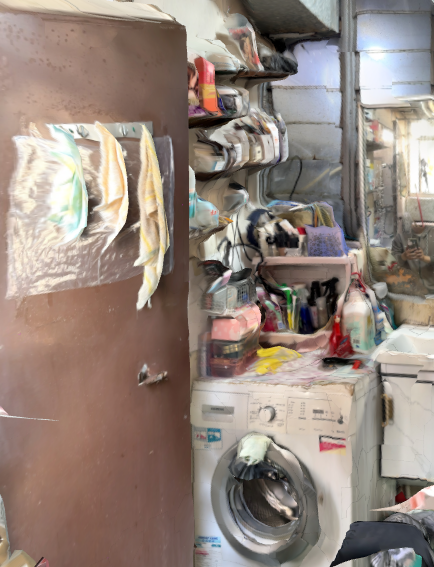
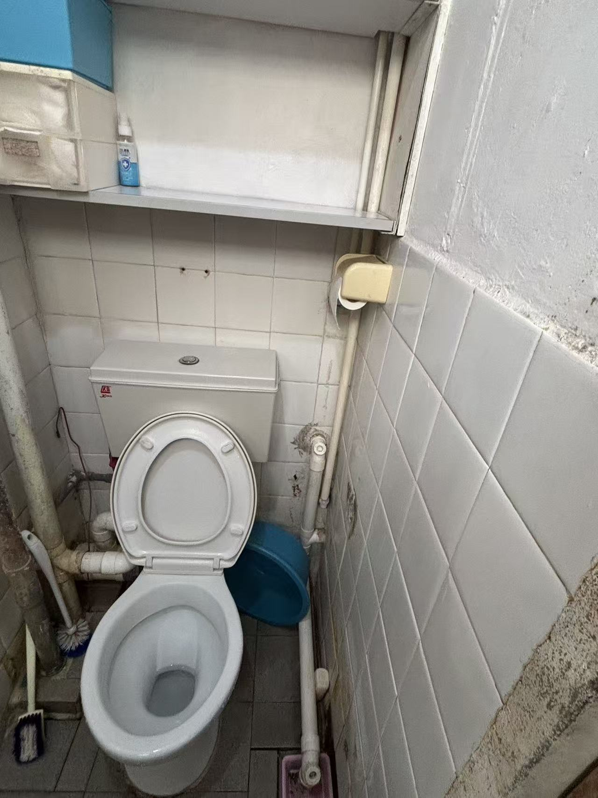
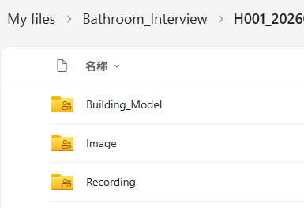
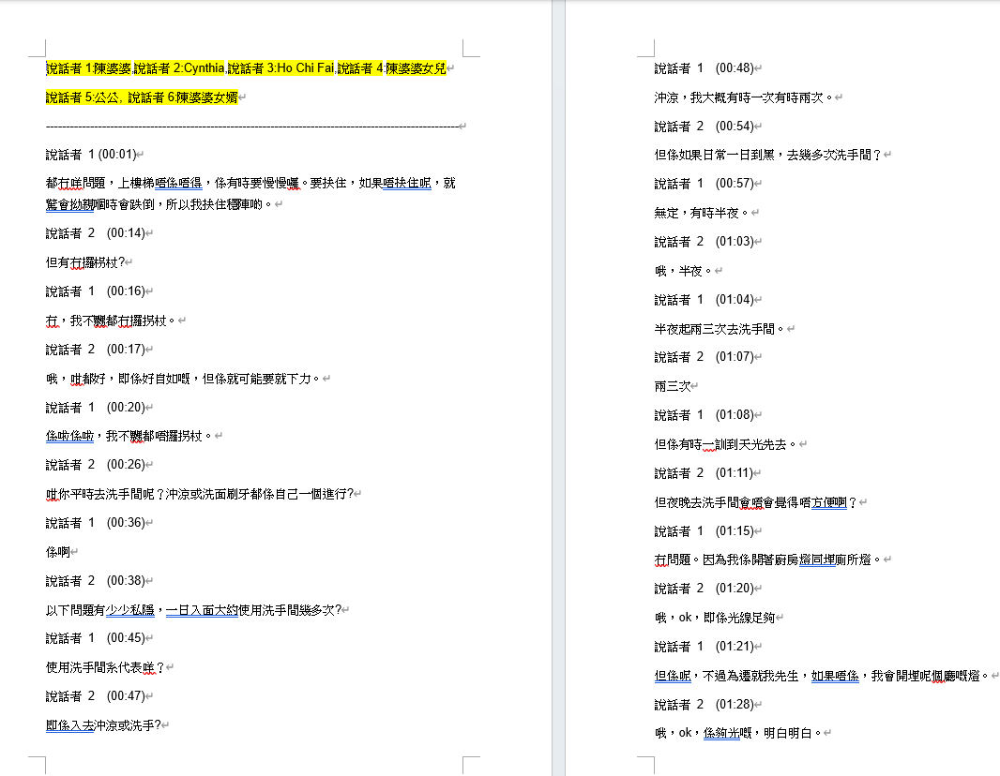
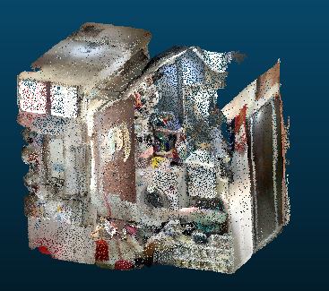
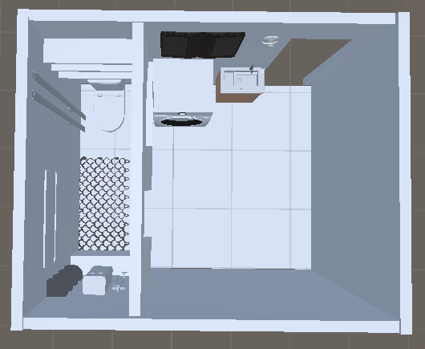

From field interview to environment digitization for the Bathroom Digital Twin framework
This page documents the step-by-step workflow used to collect, organize, and transform interview-based bathroom case data into a structured digital representation. The purpose of this process was not only to record a real bathroom environment, but also to generate a case-grounded spatial basis for the Bathroom Digital Twin framework.
The workflow combined field interview, contextual observation, image documentation, recording materials, and environment digitization outputs such as point cloud data and digital models.
A real bathroom case was selected as the basis for early-stage investigation and prototype development. This step focused on defining the target environment, preparing the interview scope, and clarifying what kinds of data were needed for later digitization and safety-oriented analysis.
Field interview and contextual observation were conducted to understand how the bathroom was used in practice and which spatial features might be related to difficulty, discomfort, or potential safety risk.


Multiple forms of raw data were collected to document the case from complementary perspectives. These materials formed the source dataset for later organization, interpretation, and environment digitization.
| Data type | Example content | Role in workflow |
|---|---|---|
| Image data | Bathroom overview photos, local fixture images, wet-area documentation | Visual documentation of the real environment and safety-relevant details |
| Recording data | Interview audio or contextual verbal records | Support interpretation of how the space is used and perceived |
| Point cloud / scan data | Spatial capture of the bathroom geometry | Provide the basis for reconstruction and digitization |
| Model-related files | Intermediate geometric or semantic reconstruction outputs | Bridge raw spatial data to DT-ready scene modeling |
After collection, the case materials were reorganized and processed according to data type. This step aimed to make the raw materials traceable, interpretable, and usable for downstream scene reconstruction.


The collected spatial data were further transformed into digital representations of the bathroom environment. This stage focused on converting the real scene into a structured digital basis that could later support scene understanding and interaction-aware analysis.


The processed case data and digitized scene were used to support the construction of a bathroom-centered digital twin environment. At this stage, the focus was on creating a structured spatial basis for later human–building interaction mapping, scenario playback, and risk-oriented analysis.